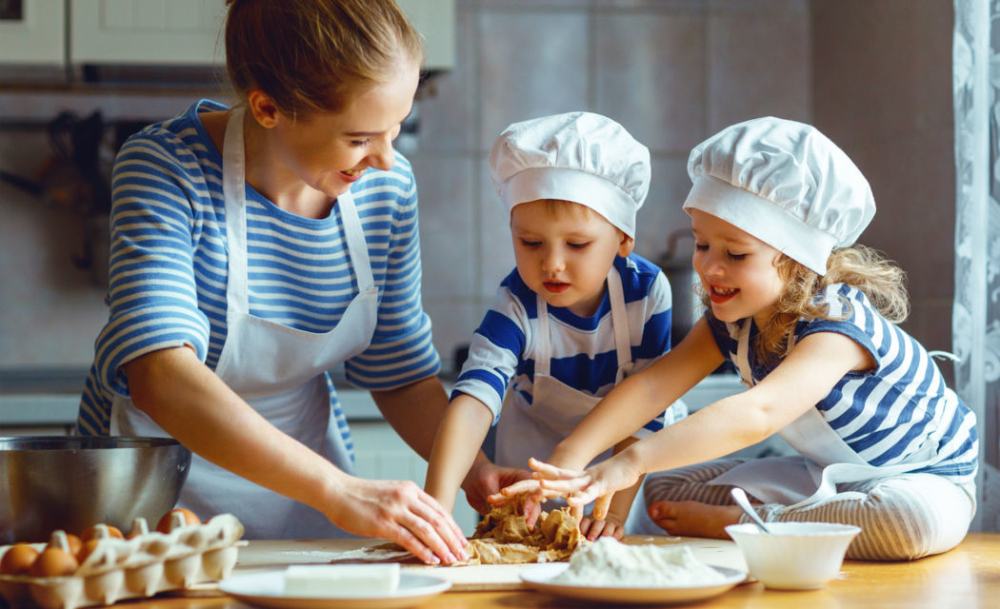

VALORES
Creatividad: Transformamos lo cotidiano en extraordinario. Cada Papibara es una muestra de innovación y originalidad en la cocina.
Calidad: Utilizamos ingredientes frescos y procesos cuidadosos para ofrecer un producto sabroso, seguro y confiable.
Diversión: Creemos que la comida también debe entretener. Nuestras papas en forma de capibara despiertan sonrisas y alegran cualquier momento.
Cercanía familiar: Diseñamos nuestros productos pensando en compartir, reunir y crear momentos especiales entre familias y amigos.
Pasión por el detalle: Desde la forma hasta el sabor, cuidamos cada aspecto para que cada Papibara sea perfecta en presentación y gusto.
Sostenibilidad: Nos comprometemos con prácticas responsables que respetan el medio ambiente y promueven un consumo consciente.
 ← Volver al inicio
← Volver al inicio